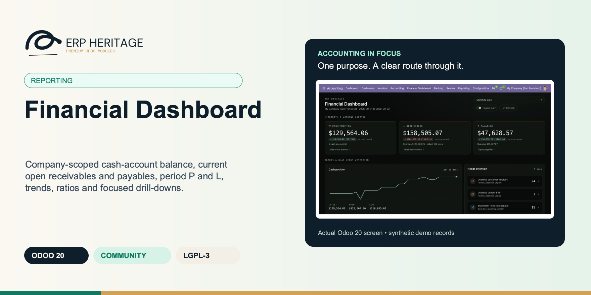
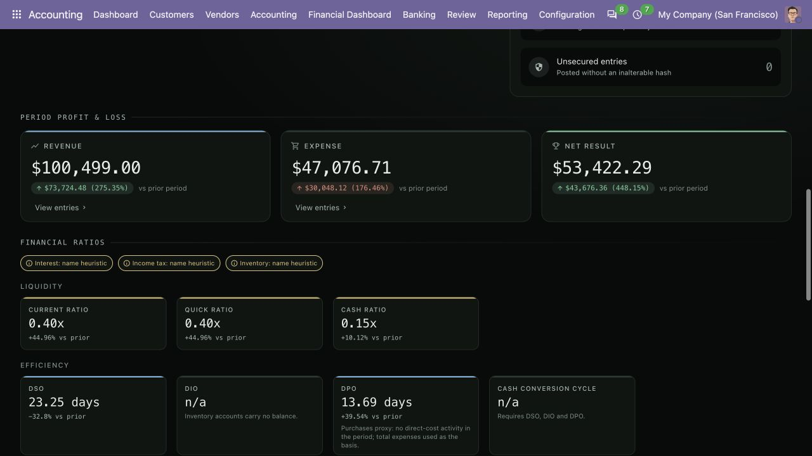
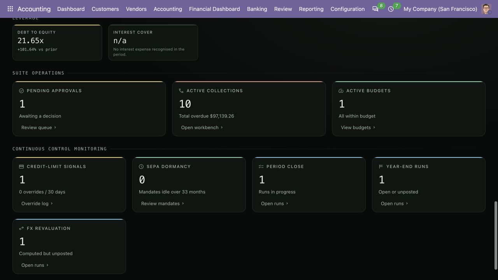
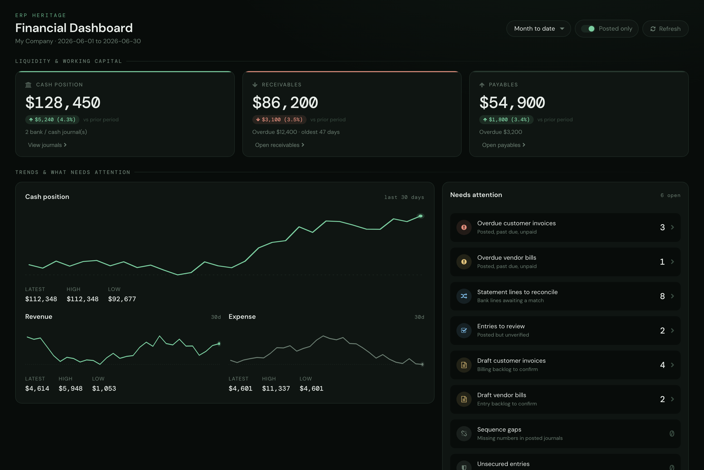
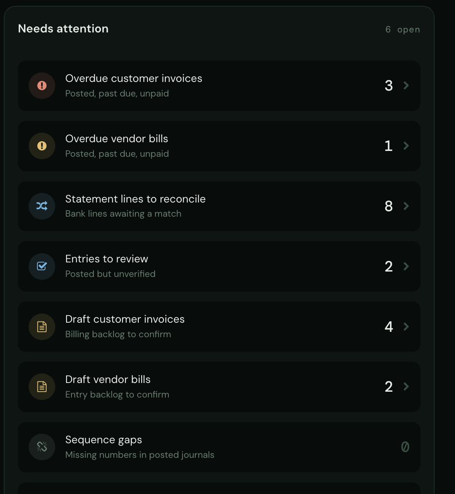
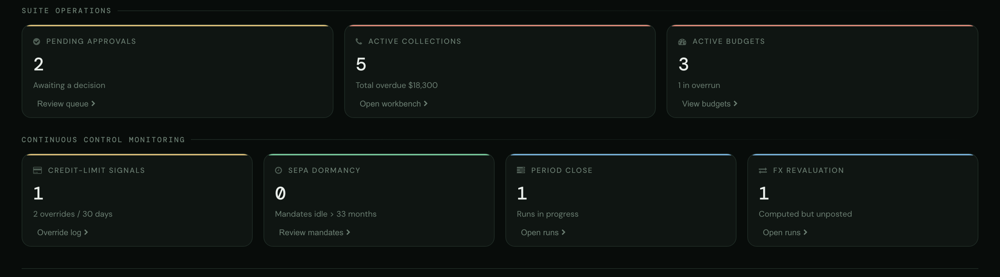

ERP HERITAGE / ODOO 20 COMMUNITY
Financial Dashboard
Company-scoped cash-account balance, current open receivables and payables, period P and L, trends, ratios and focused drill-downs.
LGPL-3 · Odoo 20 · v20.0.1.5.5 · Module guide, setup, workflows and rollout checks
The purpose
Make the next finance decision clearer.
One screen summarises a company's financial state and opens the records behind its actionable figures. Six core tiles show cash-account balance, current open receivables (total, overdue and oldest overdue age), current open payables (total and overdue), and selected-period revenue, expense and net. Optional sections appear only for installed suite modules and cover approvals, collections, active budgets, credit-limit signals, SEPA mandate dormancy, year-end, period-close and FX revaluation runs.
Inside Odoo 20
See the accounting workflow.
Captured from Odoo 20 Community using synthetic demonstration records. Configuration screens show the available workflow; external service connectivity still requires the relevant provider setup and validation.

Month-to-date accounting overview shows posted cash, receivables, payables and a cash trend.
Captured 2026-09-22 from isolated Odoo 20 Community database with synthetic demonstration records. No external submission or live banking activity is represented.

Profitability and financial-ratio cards identify heuristic indicators and explain unavailable denominators.
Captured 2026-09-22 from isolated Odoo 20 Community database with synthetic demonstration records. No external submission or live banking activity is represented.

Control tiles link to approvals, collections, budgets, credit signals, close work, year-end work and FX revaluation.
Captured 2026-09-22 from isolated Odoo 20 Community database with synthetic demonstration records. No external submission or live banking activity is represented.
Inside this module
Built around the work your team does.
Explicit company and date scope
Ledger queries bind the dashboard company and selected date or as-of boundary. Cash uses cash-account accounts, open AR and AP use current residuals, and operating P and L excludes proven year-end close and reversal entries.
Visible-tab polling
Manual refresh is always available. The 60-second clock pauses while the browser tab is hidden, refreshes once when it becomes visible, and does not start an overlapping snapshot request.
Tiles that know your suite
Six core tiles always show; up to eight optional tiles light up only when the matching module is present, detected by probing the live registry. Absent modules contribute zero and never raise, so the same dashboard works on a base install or the full suite.
STALE-CACHE GUARD
Changing the posted-only toggle or period writes the selection, invalidates computed values, and returns a fresh snapshot. Stored relative windows also advance before a manual or automatic refresh is served.
TRUE RUNNING BALANCE
The cash sparkline reconstructs an actual running balance. Entries dated before the 30-day window roll into an opening balance instead of being dropped, so the sparkline endpoint uses the same cash-account scope as the cash scalar.
SAFE BASELINES
When a prior-period value is zero, percentage change is omitted instead of dividing by zero. Comparison windows are equal-length trailing slices ending the day before the selected period.
SIGNED PAYABLES
Payable balances are stored signed (credit-side negative). The dashboard displays the absolute value so the payables tile presents a positive liability amount.
MATCHING DRILL SCOPES
Cash and P and L actions open matching journal items; AR and AP actions preserve posted-only scope. Active-budget and credit-override actions use the same active-date and rolling-30-day boundaries as their counters.
From input to outcome
Follow the complete workflow.
Prepare the business inputs
Select the company and period deliberately and distinguish current open-item figures from period-based revenue and expense. Gather active company, period selection, cash accounts, open receivables and payables, and installed-suite records. Use a representative case with a known expected result so the team can separate configuration decisions from unexpected behaviour. Keep the supporting commercial or accounting evidence available during review.
Run the supported operation
Use the visible control tiles and attention items to open the records behind an unusual amount or pending task. Follow the record’s available actions in the order intended by the workflow. Review the selected company, relevant dates and any validation messages before continuing. If the source data changes, reassess the result against the updated evidence.
Worked operating scenario
You open one screen. Cash-account balance, current open receivables and payables with overdue status, and selected-period revenue, expense and net carry equal-length prior-period deltas. Thirty-day trend lines show cash, revenue and expense. The receivables tile shows the oldest overdue age, while optional tiles surface installed-suite work such as active budgets and their overrun count.
Review the result in context
Compare operating trends with a suitable detailed report and check why a control section appears or is absent for the installed modules. Compare the outcome with the expected treatment for this case and record the reason for any difference that requires follow-up. Give exceptions an owner so they do not disappear inside a period-end spreadsheet.
Make the process repeatable
Turn the dashboard into a daily review routine with named owners for receivables, payables, reconciliation and close actions. Include the accepted operating example, configuration choices and unresolved dependencies in the handover. Review them when business policy, source data or the surrounding Odoo applications change.
Product views
Inspect the working screens.
Product screenshots supplied with this module. Records and amounts are illustrative; appearance can vary with your configuration and release.

ERP Heritage Financial Dashboard, a dark command-centre showing cash position, receivables and payables headline tiles, a cash trend area chart, and a needs-attention rail.

Needs-attention rail listing overdue customer invoices and vendor bills, statement lines to reconcile, entries to review, and the draft backlog, each with a record count.

Dashboard control-monitoring tiles showing pending approvals, active collections, overrun budgets, credit-limit signals and FX revaluation runs, with drill-down buttons.
Business situations
Where this module fits.
Focused operational adoption
Financial Dashboard is relevant to finance managers and accounting team leads who need to answer this question: What requires attention in this company before the finance team starts today’s work? Start with the process that creates the decision, identify its owner and agree what evidence the reviewer needs. A narrow pilot helps the team evaluate the supported workflow using its own accounting data before broadening access.
A reviewed period-end handover
Use the module’s reporting role as one part of a controlled close. Bring the relevant active company, period selection, cash accounts, open receivables and payables, and installed-suite records to the review, then explain the result alongside the business event it represents. Establish which outputs become part of the reporting pack and which outstanding matters need a separate accounting decision.
A clear implementation acceptance case
Turn the business question into an acceptance case: What requires attention in this company before the finance team starts today’s work? Use one ordinary example and one relevant exception from the supported scope below. Ask the intended operator to prepare it and the reviewer to explain the result. Retain that accepted example with the deployment notes so future changes can be assessed against an understood process.
Before the first result
Prepare a clean, reviewable starting point.
Agree scope before configuration
Confirm that the organisation needs the supported reporting process described here. Identify the responsible finance managers and accounting team leads and write down the decision they expect the module to support. Use the limitations section to separate shipped behaviour from an integration, professional judgement or operational service that needs another owner.
Bring the required data
Prepare active company, period selection, cash accounts, open receivables and payables, and installed-suite records. Check the relevant records in the intended company and use dates that match the business event. Resolve missing accounting configuration before evaluating calculated output; plausible-looking totals do not establish that the chosen inputs or policies are correct.
Check the installed foundations
This module declares Accounting Suite Base, Dynamic Account Reports as part of its installation foundation. Its direct standard-Odoo dependencies are account. Review the actual dependency set in the target database before a rollout, especially where another addon also extends the same accounting models, menus or posting actions.
Set up an owned review routine
Define who operates Financial Dashboard, who reviews unusual results and who maintains configuration. Run the representative workflow below in a test database using the intended users. Confirm that users can reach the work they own and that the reviewer understands the available evidence before moving the process into live operation.
Workflow reference
Understand the records and controls.
Capability detail 1
Ledger money aggregates use the suite's parameterised MoveLineQuery with an explicit dashboard-company scope; record counters and open-item residuals use company-scoped ORM aggregates. Cash position is the cumulative balance of cash-account accounts through today. Receivable and payable tiles show current residuals, not configurable aging buckets. Operating P&L, trends, deltas and ratio flows exclude only closing and reversal moves proven by Year-End Closing run links, so a window crossing fiscal close does not turn those engine entries into operating activity.
Capability detail 2
A "needs attention" rail sits beside the trend charts and surfaces day-to-day accounting hygiene from standard Odoo tables: overdue customer invoices and vendor bills, bank statement lines still to reconcile, posted entries flagged for review, the draft invoice and bill backlog, sequence gaps in posted journals, and entries posted without an inalterable hash. Each row that maps to records opens them in one click.
Capability detail 3
Pick month, quarter or year to date, trailing 30 or 90 days, or an ordered custom range, plus a posted-only toggle. Cash, open-item and P&L drills use the same account types, company and posted/date scope as their tile; the active-budget and 30-day credit-override actions use their matching counter scope. Thirty-day cash, revenue and expense sparklines sit beside equal-length prior-period deltas. Auto-refresh runs every 60 seconds only while the browser tab is visible, resumes once on return, and coalesces overlapping requests.
Capability detail 4
Ratio tiles disclose whether inventory, interest and income-tax inputs came from an account tag, a documented name heuristic or no detected account. The form and Owl board share the same model constraints, including rejection of reversed custom ranges from RPC, imports or direct writes.
Capability detail 5
The layout is an original dark command-centre design built as an Owl client action: a near-black ground, a single mint accent, monospaced numerals, and a strict spacing grid. It does not derive its layout, naming, or markup from any stock Odoo dashboard.
Capability detail 6
This module is read-only. It posts no journal entries and changes no accounting state. It reads standard Odoo accounting tables and your installed suite modules, and shows you what is there.
PARTIAL-RELOAD SAFE
Optional-module detection probes the live registry, not ir.module.module, so an absent optional model contributes zero rather than raising an error on the whole dashboard.
FLAT-SERIES SPARKLINE
A sparkline with fewer than two points renders a clear empty state. A zero-range series draws a horizontal mid-line instead of dividing by its zero range.
Six core tiles
Cumulative cash-account balance through today, current open AR and AP with overdue status, and revenue, expense and net for the selected window.
Up to eight optional suite tiles
Installed modules can surface pending approvals, active collections, active budgets and overruns, credit-limit signals, SEPA dormancy, and year-end, period-close and FX runs.
Needs-attention rail
Overdue invoices and bills, reconciliation and review backlogs, draft documents, sequence gaps and unsecured entries. Rows with a supported record target open that target.
Period and posted controls
Month, quarter or year to date, trailing 30 or 90 days, or an ordered custom range. Posted-only applies to ledger/open-item money scopes; operational counters retain their documented state criteria.
Trends and deltas
Thirty-day cash, revenue and expense lines plus equal-length prior-period deltas. Zero prior values omit percentage change.
Matching drill-throughs
Cash and P and L open matching account/date/company scopes; AR and AP preserve posted-only; active budgets and credit overrides preserve their counter windows.
Per-user, per-company record
Selection persists between visits. Manual refresh and visible-tab polling request new computed snapshots; hidden tabs do not poll.
Sequence hole count
Gaps in the posted-entry numbering per journal sequence prefix. A non-zero value means a posted number is missing (deleted or reset), which auditors flag.
Use Monday’s dashboard without mixing time bases
Illustrative implementation exercise. The finance manager opens the dashboard for Company A before the weekly meeting. Review current open receivables and payables separately from the selected period’s revenue and expense. A receivable settled today can change the open-item view even when the meeting still discusses last month’s P&L. Inspect cash-account balance using its disclosed cumulative basis. Choose one overdue item and one operating variance and follow each to the appropriate detail. Then switch company and confirm that the meeting is now discussing a different scope. Optional suite sections should be interpreted against the modules and records actually installed, rather than as a promise that every control appears in every database.
Questions before rollout
Answers your finance team needs.
Who is this module designed for?
It is designed for finance managers and accounting team leads. Its central business question is: What requires attention in this company before the finance team starts today’s work? The listing describes the shipped operating scope and the decisions that remain with the organisation. Evaluate it against your own records and review process, rather than treating the module name as a promise to cover every scenario in that accounting area.
What should be ready before the first run?
Have active company, period selection, cash accounts, open receivables and payables, and installed-suite records ready, together with the person who owns the related accounting policy. Select the company and period deliberately and distinguish current open-item figures from period-based revenue and expense. A known example makes it possible to check the result and resolve configuration questions before the process is repeated across more records or companies.
What should a reviewer inspect?
Compare operating trends with a suitable detailed report and check why a control section appears or is absent for the installed modules. Keep the relevant source evidence with the output and be explicit about company, date and policy choices. The most useful review asks whether the result follows from the business inputs, not only whether the operation completed without a validation message.
How does this fit into the accounting suite?
It belongs to the reporting family. Its declared custom dependency foundation is Accounting Suite Base, Dynamic Account Reports. Installing the complete suite also brings other operating and specialist modules; using this focused module should be evaluated against its own dependency list and scope. Optional services still need their own configuration and agreement where applicable.
What is the most important scope boundary?
Read-only. The dashboard posts no journal entries and changes no accounting state. It does not write its own audit rows; audit logging lives in the suite modules that change state. Turn the dashboard into a daily review routine with named owners for receivables, payables, reconciliation and close actions.
Does installing it validate our accounting policy?
No. Financial Dashboard provides the specific records, calculations or workflow described in this listing. The organisation remains responsible for its source information, accounting choices, supporting evidence and review. Where the process uses an estimate, a contract assessment or an external service, appoint the appropriate owner before relying on the output.
Scope and requirements
Know exactly what you are installing.
Read-only. The dashboard posts no journal entries and changes no accounting state. It does not write its own audit rows; audit logging lives in the suite modules that change state.
Overdue means anything past its maturity date as of today. There is no configurable cut-off, grace-day setting or aging-bucket parameter; the receivables tile does surface the oldest open item's age.
The budget tile shows a count of active budgets in overrun (total actual above total budgeted), not a variance amount or percentage, and there is no per-line variance-threshold logic in this module.
Tile counts are exactly six core tiles plus up to eight optional tiles for installed modules. There is no published render-time benchmark or timing guarantee.
Optional tiles appear only when the matching suite module is installed. On a base install you get the six core financial tiles and nothing more.
Standards references describe the accounting subject addressed by the module. They do not establish certification, statutory filing acceptance or suitability for every jurisdiction. Your finance team owns its assumptions, accounting policies and review.
Installation scope
Included dependencies, explained.
Odoo installs the following direct dependencies automatically. Additional dependencies can be brought in by those modules. Related modules in the wider catalogue are optional unless they appear in this dependency chain.
Accounting Suite Base
Shared reporting engine for the ERP Heritage Odoo 20 Community accounting suite, providing a reproducible report-execution audit log and a move-version result cache. Append-only audit log of every report render with user, timestamp, the full options snapshot, runtime, and a SHA-256 result hash for XLSX and PDF output, plus a multi-company analytic-aware parameterised SQL builder with no raw user input in SQL, a three-tier User/Manager/read-only Auditor privilege model, and a currency-aware XLSX writer. Odoo 20 Community accounting reporting engine, reproducible financial report audit trail, move-version report cache invalidation, multi-company parameterised SQL builder, append-only audit log, read-only auditor role, SHA-256 report hash compliance, currency-aware XLSX export, analytic-aware journal item aggregation.
Included dependency: eh_account_base. The shared reporting engine under the ERP Heritage accounting modules: an append-only render audit log, precise per-company cache invalidation, and a whitelist-only parameterised SQL builder.
Dynamic Account Reports
Next generation dynamic financial reports for Odoo 20 Community, built on a SQL-direct aggregation engine that stays fast on large ledgers. Profit and Loss, Balance Sheet, Trial Balance, General Ledger, Partner Ledger, Aged Receivable, Aged Payable, Cash Flow (direct and indirect), plus Customer and Vendor Statements and Analytic Balance. Compare custom or successive periods in either order, pivot Profit and Loss, Balance Sheet, and Trial Balance by analytic account or plan with independent totals, and drill into the exact scoped cell. Hierarchical chart nesting, grouped screen/XLSX/PDF headers, currency-aware exports, and an append-only audit log complete the suite. Keywords: Odoo 20 dynamic financial reports, profit and loss report, balance sheet, trial balance, analytic columns, period comparison, drill down journal entries, accounting report XLSX PDF export, fast reports on large database.
Included dependency: eh_account_dynamic_reports. Profit and Loss, Balance Sheet, Trial Balance, General Ledger, Aged Receivable and Payable, Cash Flow, Partner Ledger, Statements. One OWL viewer, currency on every cell, audit log per render.
Account
Odoo Community dependency required by this module. Its own dependencies and configuration remain part of the installation scope.
Acceptance guide
Run a pilot your team can trust.
The following are recommended rollout checks, not claims of additional built-in features. Apply the checks relevant to this module and retain evidence of your own results.
Start with one complete business cycle
Select a recent, closed period that your finance team understands well. Keep its approved source documents, ledger totals and existing working papers available. Reproduce that period in a staging database before working on current transactions. A familiar period makes differences visible: you can distinguish an opening balance problem from a configuration choice, a timing difference or a genuine defect. Agree which person owns each discrepancy and what evidence will close it. Successful installation is the starting point; a repeatable business outcome is the acceptance criterion.
Define the result before choosing settings
Write down the output your team needs from this module: a reviewed transaction, an exported file, a reconciled balance, an approved schedule or an operational queue. Identify who prepares it, who reviews it and who relies on it next. Make the scope concrete with one company, one reporting period and a small representative document set. Include an ordinary case and an exception. This keeps the evaluation focused on the business decision instead of the number of available screens, and gives reviewers a consistent way to compare the new workflow with their current process.
Check the edition and dependency boundary
Use the Odoo 20 edition of the module and its dependencies together. The manifest defines what Odoo installs automatically; a feature mentioned elsewhere in the wider product family is not automatically included. Review the dependency guide on this page before enabling the complete suite, especially where your deployment also uses Sales, Purchase, Inventory or website components. Confirm that your hosting arrangement accepts custom server modules and their Python requirements. Keep a copy of the installed module versions with your acceptance record so a later update can be checked against the same baseline.
Prepare master data with finance owners
Check the companies, currencies, fiscal periods, journals, accounts and partner records used by your sample. Confirm that account purposes agree with your chart of accounts and that archived records are not being selected inadvertently. Review company-specific settings while the intended company is active. Where a workflow needs bank details, analytic dimensions, product information or payment terms, validate those inputs with their owner. Clean master data reduces repeated exceptions and makes it easier to investigate the exceptions that remain. Keep the preparation list short enough for someone else to repeat it.
Keep opening balances traceable
Decide which source establishes the opening position before introducing new transactions. Save the source date, company, currency and supporting reconciliation. If a module maintains a schedule or a working-paper balance alongside the ledger, document how that opening amount should tie to the general ledger. Do not use balancing entries to hide a difference during the pilot. Classify the difference, correct its source and rerun the comparison. The resulting trail is useful both for your internal reviewer and for support if an unexpected calculation needs investigation.
Assign preparation and review deliberately
Choose named users for preparation, review and administration. Confirm their practical access by signing in as those users in staging, rather than relying on an administrator's view of the menus. A visible menu does not replace model access or record restrictions, and a hidden menu does not by itself prove that data is protected. For your own acceptance check, verify the specific business operations each role needs. If your organization requires separation of duties, include that policy in the rollout criteria and check the actual workflow against it before granting production access.
Exercise company boundaries
Run the sample with the intended company selected, then repeat the relevant navigation and search checks as a user assigned to a different company. Record which company owns each source document and each generated result. For users who work across entities, confirm how their allowed-company selection affects totals and available records. Investigate any cross-company difference before it becomes a month-end problem. Group-level work and company-level work have different scopes; use the appropriate module and document the scope on the review evidence instead of assuming one screen represents both.
Use representative currencies and dates
Include a company-currency case and, where relevant to the module, a foreign-currency case. Check the date used to select exchange rates and keep the rate source available to the reviewer. Add a transaction near a period boundary so the team can see whether document date, accounting date or another business date drives the result. Test decimal precision with a small amount as well as a large one. Record the expected rounding treatment. These checks turn vague differences in totals into questions that can be resolved against your accounting policy.
Trace one result back to its source
Choose one result and follow the available links or record references back to the original business document. Compare its company, partner, amount, currency and dates with the expected source. Where the workflow creates a journal entry, inspect the accounts and balancing lines before relying on an aggregate report. Where it exports a file, compare the file's records with the selected batch. Save a small, intelligible evidence set instead of an indiscriminate screenshot archive. A reviewer should be able to explain what happened without needing the original preparer beside them.
Treat posting as a controlled milestone
If this module creates or updates accounting entries, separate preparation from the decision to post in your operating procedure. Inspect the proposed outcome, resolve missing configuration and confirm the intended period before using a posting action. If the module does not post entries, identify the equivalent commitment point, such as sending a file or approving a review record. Record who is allowed to make that decision. The page describes the module's supported workflow; your team still needs an operating policy that fits its accounting responsibilities and approval structure.
From pilot to production
Make the workflow repeatable.
Test correction, not only success
Use a deliberately incomplete sample in staging: a missing required setting, an unsuitable date or a source document that is not ready for the next step. Observe the actual message and the record state that remains. Correct the input and repeat the operation. Check that the recovered result agrees with the ordinary successful case. For transactions already committed, use the supported correction or reversal workflow rather than editing database records. Your acceptance record should explain how staff recover from mistakes, because that is part of day-to-day usability, not an unusual administrative task.
Check repeated actions with a small sample
Repeat an import, calculation, preparation step or button action only where the documented workflow permits it. Confirm whether the expected behavior is a recalculation, a refusal, a new version or reuse of an existing record. Do not infer universal duplicate prevention from one successful test. Record the behavior of the actual operation your team will use and include it in staff guidance. A small, identifiable sample makes duplicate records easy to spot and avoids creating a misleading acceptance result from a large batch with poorly understood contents.
Review period locks before the first close
Where accounting dates are involved, inspect your company's lock settings and the role that can change them. Include one sample dated inside a closed period and one in the open period, then observe the supported behavior with normal finance access. Agree how the team will handle late documents and approved corrections. The goal is a clear route for legitimate work that preserves the reason the period was closed. Record the policy alongside the module's workflow so operators know when to stop and involve the person responsible for the close.
Validate exports with their recipient
If the module produces reports or exchange files, have the intended recipient inspect a sample. For a finance report, check the filters, company, dates, currency, labels and totals. For a bank or service file, use that recipient's own validation or test process before a production submission. Generating a structurally valid file does not establish acceptance by every provider. Keep the exact sample and any recipient feedback with the rollout record. Where no export is provided, agree which supported screen or linked record serves as the handover evidence.
Separate optional services from core work
Identify any step that depends on a separately configured provider, connector, credential or commercial service. Confirm the exact adapter and its requirements before scheduling a live demonstration. Some family modules provide deterministic rules or file preparation without a live external connection; their usefulness should be evaluated on that basis. Test a provider failure in staging only when the adapter offers a safe test route. Make it clear who manages credentials and provider subscriptions, and who should be contacted when an external service is unavailable.
Measure a realistic working session
Time the operations your staff will actually repeat, using a dataset that resembles your expected company, date range and document volume. Record the environment and sample size beside the timings. Include navigation, filtering, preparation and review rather than quoting a single best-case page load. This page makes no universal performance promise: network latency, database size, customizations and infrastructure affect results. Use measurements to choose a practical rollout batch size and to identify any operation that needs investigation before more users join the workflow.
Train through examples with expected outcomes
Give staff a short exercise that begins with a business situation and ends with a reviewed result. Include the expected amount or state, the navigation route, the point at which a reviewer becomes involved and the supported correction route. Let operators explain why their result is correct. Add only the settings and exceptions relevant to their role. A concise internal playbook built from your own pilot is easier to maintain than a large collection of unannotated screenshots, and it helps new users understand the relationship between this module and the rest of Accounting.
Make support requests reproducible
Capture the module version, Odoo version, affected company, operation, exact message and a minimal sequence of steps. Use redacted sample documents when sharing evidence outside your organization. State the expected result and the actual result separately. Include the date filters and role used, because the same record can look different with another scope or set of permissions. Never include passwords, API tokens or private keys in a support message. Good reproduction details allow the problem to be investigated without guessing at your business setup or asking staff to repeat a full close.
Rehearse an upgrade on a copy
Before deploying an update, back up the database and filestore together, and restore that backup into an isolated environment. Apply the module update there, then repeat the key pilot scenarios using the saved acceptance record. Check that existing documents remain readable and that the expected actions and menus still lead to the right workflow. Include one newly created record as well as an older one. Keep a rollback plan appropriate to your deployment and confirm that the backup can be restored before scheduling the production change.
Define a small release decision
Agree the release criteria before the pilot ends: expected financial results, access boundaries, supported corrections, output acceptance and owner sign-off. List unresolved items with their business impact instead of treating every observation as a blocker or dismissing it as cosmetic. Start production with a manageable scope and a named reviewer. Keep the first cycle's evidence so that later enhancements can be assessed against a concrete baseline. App-store descriptions help you select and understand the module; acceptance in your own configuration establishes whether the workflow is ready for your team.
Connected capabilities
Choose the next capability with context.
These related modules explain how this workflow connects to the wider accounting process. Only the dependencies declared above are installed automatically. Choose optional additions for a specific business need.
Accounting Suite Base
The shared engine that powers the ERP Heritage accounting modules for Odoo 20 Community. It auto-installs as a dependency of any ERP Heritage accounting module, so you do not need to install it by hand.
Dynamic Account Reports
The financial reporting layer of the ERP Heritage accounting suite for Odoo 20 Community. Fifteen accountant reports are built on a single AbstractModel handler hierarchy and rendered through one OWL viewer, so the look and feel is uniform across every report. The hot path is plain Python SQL, not the ORM: a parameter-bound, posted-only, company-scoped query against journal item that stays responsive on large databases.
Dynamic Reports Pro
Dynamic Reports Pro adds four capabilities on top of the free Dynamic Accounting Reports engine: scheduled multi-channel delivery, a form-driven custom report builder, per-user saved views, and multi-period forward projection.
Odoo 20 Community Accounting Pro
ERP Heritage Community Accounting Pro installs a fixed collection of 50 direct accounting dependencies. Together with the suite itself and the transitive EH EDI Core foundation, its custom-module closure contains 52 modules. The collection brings reporting, reconciliation, payments, receivables, approvals, specialist accounting, group work and close controls into one Community installation. Its value comes from connecting those processes and their evidence; adoption still requires deliberate company configuration, accounting ownership and review. Australian BAS is available separately and installs the suite as its accounting foundation.
Plan the surrounding workflow
Companion playbooks, with scope made explicit.
The following playbooks explain adjacent work in named companion modules. They are included here to help you plan the handoff around this module. Each companion is labelled as an installed dependency or an optional addition. These capabilities belong to that named companion, not to the standalone module you are reading about.
Included through this module’s dependency chain
Dynamic Account Reports
Profit and Loss, Balance Sheet, Trial Balance, General Ledger, Aged Receivable and Payable, Cash Flow, Partner Ledger, Statements. One OWL viewer, currency on every cell, audit log per render.
Fifteen standard reports
Executive Summary, Deferred Revenue, Deferred Expense, Bank Reconciliation, Trial Balance, P&L, Balance Sheet, General Ledger, Partner Ledger, Aged Receivable, Aged Payable, Cash Flow, Customer Statement, Vendor Statement, and Analytic Balance.
Customer + Vendor Statements
Both sides; the customer statement also lands on the customer portal home for self-service.
Currency-aware rendering
Every monetary cell renders with the company currency symbol; the XLSX writer builds a matching Excel number-format string so the spreadsheet matches the screen cell for cell.
Period and analytic columns
Custom and multi-period comparison in either order, plus Profit and Loss, Balance Sheet, and Trial Balance columns by analytic account or plan with independently queried totals.
Hierarchy and exact drill-down
Trial Balance, Profit and Loss, and Balance Sheet offer Account hierarchy or Flat accounts using native Parent Account relationships. Parent own postings and descendants roll up once, including relevant archived parents and offsetting children. Saved views and scheduled exports retain the layout. Exact drill-down keeps company, ledger, period and analytic scope.
Reproducible audit log
Every render including cache hits writes an audit row pointing at the source compute. An auditor can re-execute the same render later.
PDF and XLSX export
Universal PDF template with a brand footer; XLSX writer with the same currency block as the screen cell.
Multi-company aware
Every SQL build emits company scope; cache key carries the company set canonically so two scopes never collide.
Review this companion’s own setup and scope before connecting the workflows. Keep the company, reporting date and business document references consistent at the handoff.
Optional companion; requires separate installation
Collections Workbench
Turn the aged receivable report into an active dunning workflow that creates, chases, and escalates a case per overdue customer on its own.
The report that chases for you
One GROUP BY SQL pass builds a case per overdue customer from open AR and refreshes it nightly. The follow up cron picks the next due level per case and sends it, so the queue moves whether or not a collector logs in.
A history you cannot rewrite
Every call, email, follow up, and broken promise escalation writes a row to an action log that blocks write and unlink at the model level. Auto creation is idempotent and de duplicated by a partial EXCLUDE constraint, so re running the cron never doubles a case.
Yours to keep
LGPL-3 source on disk. No activation key, no phone home, no recurring licence. Configure the ladder per company, swap in your own templates, and extend the workflow. Free today, free at renewal, because there is no renewal.
PAID OVERNIGHT
The nightly aging refresh zeroes the total on cases whose partner paid down their balance, so a customer who drops out of the overdue aggregation never lingers with a stale figure until someone clicks Refresh.
NEVER REOPENED
A resolved case is never reopened. A new overdue invoice spins up a fresh case so the resolution history stays intact. The EXCLUDE constraint only forbids two open cases for the same commercial customer, not a closed one plus a new one.
PROMISE IDENTITY GUARD
Broken promise escalation is idempotent. The cron records the exact immutable promise action it handled, so time passing can never re escalate the same commitment while a newer promise remains independently eligible.
RACE SAFE COUNTERS
Follow up counters increment with an atomic SQL UPDATE then a cache invalidation, so a manual send and the scheduled cron hitting the same case at once cannot clobber each other with a read modify write race.
FEE TO THE CENT
The late fee wizard computes flat or prorated percent per month fees in Decimal with ROUND_HALF_UP, revalidates the live ledger at issuance, and records the invoice under a database unique issuance fingerprint so the same exposure, policy, and issue date cannot be charged twice.
Review this companion’s own setup and scope before connecting the workflows. Keep the company, reporting date and business document references consistent at the handoff.
Optional companion; requires separate installation
Period Close Workflow
The spreadsheet month-end close, moved into Odoo with a real sign-off chain and a segregation-of-duties gate.
Segregation of duties, enforced
The preparer cannot request review. The reviewer cannot approve. A third, different Accounting Manager performs final sign-off. These are named server-side refusals, not a policy note in a manual.
Templates and runs stay separate
A run copies the template into independent per-run task instances. Editing this period never mutates the template and never reaches back into a prior closed run. The append-only sign-off history survives every reopen cycle.
Yours to keep
LGPL-3 source on disk. No activation key, no phone-home, no recurring licence. Tasks and sign-offs are queryable, exportable records with server-owned audit anchors. Free today, free at renewal, because there is no renewal.
RE-MARK · NO-OP
Clicking Mark Done on an already-done or not-applicable task is a no-op that preserves the original signer and timestamp. The audit trail cannot be quietly overwritten by a second click, and a regression test guards the prior bug where the check compared against a non-existent state.
OPTIONAL TASKS
Optional tasks (Is required false) never block the request-approval transition, so a close can proceed with optional items still pending. Only required tasks gate the close, which is verified by test.
EMPTY CHECKLIST
Creating a run from a checklist with zero task templates raises an error instead of producing an empty, meaningless run.
MANAGER-ONLY RESET
Only an Accounting Manager can revert a completed task to pending. The reset clears the completion fields and any blocked reason, a controlled rework path that ordinary users cannot trigger and that is itself recorded in chatter.
PERIOD AUTO-DERIVE
Setting the period end auto-fills the period start to the first of that month only when the start is empty or out of range, so a deliberately custom range is left intact.
Review this companion’s own setup and scope before connecting the workflows. Keep the company, reporting date and business document references consistent at the handoff.
Optional companion; requires separate installation
Multi Version Budget Pro
Multi-version budgets with purchase-order encumbrance, sign-aware variance, and an optional analytic dimension, computed straight from posted journal items.
Budgets that stop a PO
An off/warn/block policy is enforced when a purchase order is confirmed, and the block path accumulates the required amount per budget line across every PO line before it checks availability. Several lines that each fit but together overrun are still caught. Commitments are idempotent per PO line, so re-confirming updates instead of duplicating.
Variance the right way round
Income, liability and equity accounts are sign-normalised before variance and availability are computed, so a revenue budget met to the dollar reads as zero variance, not a 200 percent overrun. A non-zero actual on a zero budget reads as a full 100 percent overrun rather than a silent 0 percent. The same maths runs in the ORM compute and the SQL report view, parity-tested.
Yours to keep
LGPL-3 source on disk. No activation key, no phone-home, no recurring licence. Multi company aware, posted-only actuals computed in one batch SQL per budget so it stays fast on hundreds of lines. Read it, extend it, fork it if you need to.
COMMITMENTS
Two purchase-order lines that resolve to the same budget line keep separate commitments keyed by PO line, instead of one silently overwriting the other. Re-confirming a PO updates the existing commitments rather than creating duplicates.
OVERRUN
The block policy accumulates the required amount per budget line across multiple PO lines before checking availability, so several lines that each individually fit but collectively overrun the budget are still caught at confirm time.
VARIANCE
A non-zero actual against a zero budget returns 100 percent to flag a full overrun, instead of being reported as a misleading 0 percent.
SIGN
Actuals on credit-natured accounts (income, liability, equity) are sign-flipped before variance and availability are computed, so a 10k revenue budget against 10k actual reads as zero variance, not a 200 percent overrun. The report view replicates the same normalisation.
RELEASE
A billed purchase order with a zero or negative untaxed total releases its commitment fully rather than dividing by zero when computing the proportional release.
Review this companion’s own setup and scope before connecting the workflows. Keep the company, reporting date and business document references consistent at the handoff.
ERP Heritage
Plan your first successful cycle.
Start with the workflow, setup and acceptance guide above. For implementation or support, share your Odoo version, module version, business scenario and a redacted example. Keep credentials and personal data out of support messages.
Published by ERP Heritage. Odoo is a trademark of Odoo S.A.; this independently developed application is not an Odoo S.A. product or endorsement.
Package: eh_account_dashboard · Release: v20.0.1.5.5 · License: LGPL-3.